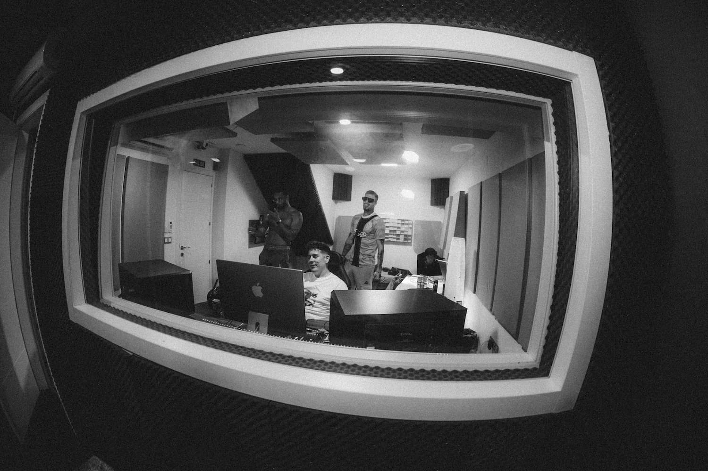

Mastering Only
€100 + VAT
Mastering of your finished mix: competitive loudness, translation to any system and tonal consistency for your release.
BookMix · Mastering · Online
I'm Jm Castillo, a mixing and mastering engineer with 15+ years working for some of the biggest names in Latin and Spanish music. My mixes and masters have earned 37 Platinum records, 38 Gold and 3 Odeon Awards. Take your music to the next level, wherever you are.
Quick guide
Mixing and mastering are the two final stages of producing a song. Mixing works on every track (vocals, beat, instruments) so the song sounds clear, balanced and alive. Mastering puts the final touch on the stereo mix so it sounds just as good on every platform and device, at commercial and streaming standard.
I mix every element of your song, from EQ and compression to creative effects: vocal editing and Melodyne tuning, vocal alignment, reverbs, delays and automation. Every detail is handled so your music translates on any sound system.
Deep dive (in Spanish): What is mixing in a song?
Mastering dials in competitive loudness, tonal consistency and translation to any system: from earbuds to car speakers, from Spotify to radio. The goal is for your song to reach its full potential and stand up to anything on streaming platforms.
More in the mastering guide (Spanish) and the LUFS targets by platform.
| Mixing | Mastering | |
|---|---|---|
| Starting material | Individual tracks or stems | Final stereo mix (or stems for stem mastering) |
| Goal | Clarity, balance, punch and emotion | Competitive loudness, consistency, translation |
| Tools | EQ, compression, FX, tuning, automation | Fine EQ, bus compression, limiting, stereo control |
| Order | First | Last step before distribution |
| Price with Jm Castillo | From €150 (Beat or Vocal Mix) | From €100 (Mastering Only) |
Services & pricing
Fixed prices per song. Every plan includes a 3–5 business day turnaround and revisions.
€100 + VAT
Mastering of your finished mix: competitive loudness, translation to any system and tonal consistency for your release.
Book€150 + VAT
Mastering applied to your stems (vocals, drums, bass, music…) for more tonal and dynamic control.
Book€150 + VAT
Beat mix with compression, EQ, FX and more. Vocal editing not included.
Book€150 + VAT
Vocal editing + advanced mix: compression, reverb, delay, Melodyne tuning, vocal alignment…
Book€250 + VAT
Beat Mix + Vocal Mix + advanced production editing.
Book€300 + VAT
Beat Mix + Vocal Mix + advanced production editing + mastering. Your song, ready to release.
Book€400 + VAT
Full Mix/Mastering + mix stems delivered (a cappella, backing vocals, drums, bass, synths…) + production arrangements + priority scheduling.
BookTell me about your project (single, EP, album, arrangements) and I'll recommend the plan that fits best.
Ask me*VAT not included. Payment is made before the project starts. WhatsApp support Monday to Friday, 8:00–15:00 (CET). Full details on the Services page (Spanish).
Process
A simple, 100% online workflow for artists, producers and labels in any time zone.
Send your project following the file guidelines.
We confirm your plan and payment is made before work starts.
I work on your mix or master within 3–5 business days.
You send your notes and I fine-tune until you love it.
You receive release-ready final files for your distributor.
Real results
Some of the certified songs that came out of the studio. See the full list on Certifications and listen on Work.
Case study
Mixed and mastered by Jm Castillo — one of the most-streamed urban tracks in Spain: 8x Platinum plus Gold. Proof of what it takes for a song to compete on playlists, radio and live.
Tech specs
Streaming platforms normalize playback loudness, so a louder master doesn't play louder — it plays at the same level with less dynamics. The key is a master that's competitive for your genre, with safe peaks (true peak ≤ -1 dBTP), that keeps its punch after normalization.
| Platform | Reference normalization | Recommended true peak |
|---|---|---|
| Spotify | -14 LUFS integrated | -1 dBTP (-2 dBTP if louder than -14 LUFS) |
| Apple Music | -16 LUFS (Sound Check) | -1 dBTP |
| YouTube / YouTube Music | -14 LUFS | -1 dBTP |
| Amazon Music | approx. -14 LUFS | -1 / -2 dBTP |
| TIDAL | -14 LUFS | -1 dBTP |
| Deezer | -15 LUFS | -1 dBTP |
Should you master to -14 LUFS? Not necessarily. Reference masters in reggaeton, trap or urban pop are usually louder, and that's an artistic call. What matters is that it sounds dense, clear and distortion-free once the platform turns it down. Want a second opinion on your master? Message me.
File delivery
Follow these guidelines so your mix or master can be done at the highest possible quality.
Once exported, send everything via Google Drive, WeTransfer or similar to stems@jmcastillo.es.

About
Juan Manuel Castillo, born in Seville and known as “JM Castillo” or “Kstillo”, is a sound engineer and music producer. With 15+ years mixing and mastering for some of the biggest artists in Spanish-language music, I know exactly what your song needs to go from a good recording to a professional-sounding record.
Full story on the About page (Spanish) and on Instagram (@jmcastillodj).
FAQ
Mixing is balancing and processing every track of a song (vocals, beat, instruments) with EQ, compression, effects and panning so it sounds clear, balanced and alive. Mastering is the final step: it optimizes the finished mix for loudness, tone and dynamics so it sounds great on every platform and device. See the comparison table.
Mixing + mastering a song (Full Mix/Mastering) costs €300. Mastering only is €100, stem mastering €150, beat mix or vocal mix €150, full mix €250 and the Pro Mix/Master plan €400. VAT not included; payment is made before the project starts. See all rates.
Turnaround is 3 to 5 business days on every plan. The Pro Mix/Master plan also includes priority scheduling.
Every plan includes up to 3 revisions, except Pro Mix/Master, which includes up to 10.
Send separate tracks as at least 44.1 kHz / 24-bit WAV files, with no compression on the master channel and a final level no higher than -6 dB. Keep vocals on separate tracks (lead, backing vocals, ad-libs) and avoid reverb, delay or compressors on the tracks. Send them via Google Drive, WeTransfer or similar to stems@jmcastillo.es. See the file guide.
The instrumental and the vocal as WAV files of at least 44.1 kHz / 24-bit, with the master channel uncompressed and a final level of -6 dB.
Spotify normalizes playback to around -14 LUFS integrated and recommends a true peak of -1 dBTP (or -2 dBTP for masters louder than -14 LUFS). You don't need to master exactly to -14 LUFS: what matters is a master that's competitive for its genre and keeps its punch without distorting once normalized. See the platform table.
Yes. The whole process is online: you send your files, receive the mix, send notes and download release-ready final files. I work in English and Spanish with artists in the US, UK, Latin America, Europe and worldwide. Versión en español aquí.
Artists including RVFV, Rels B, David Bisbal, Camilo, Duki, Anitta, Lola Indigo, India Martínez, Luis Cortés, Morad, Omar Montes and Sfera Ebbasta, plus labels such as Warner, Universal, Sony, Virgin, Spinnin' Records and Toolroom. His work has earned 37 Platinum records, 38 Gold and 3 Odeon Awards.
Choose your plan on the Services page and book, or message me on WhatsApp at +34 623 040 053 (Monday to Friday, 8:00–15:00 CET) or email info@jmcastillo.es. We confirm the plan, payment is made and I get to work.
Let your music speak
The perfect balance of technique and emotion: your music will sound exactly the way you imagined it — only better.